手元に残す
編集用ファイル .kakiire
- 注釈はレイヤーのまま。向きも範囲も、あとで動かせる
- 元の画像も一緒に、1つのファイルにまとまる
- Finder の Quick Look でそのまま中身が見える
かきいれ【書き入れ】 画像や書類に、文字や印を書き加えること。
Kakiire は、スクリーンショットに矢印・枠・文字を書き入れるための Mac アプリ。見せたくないところは で隠せます。
先細りの矢印、枠、袋文字、番号スタンプ。キーひとつで道具を持ち替えます。
モザイクとぼかしで、メールアドレスや顔を伏せる。書き出す画像には必ず焼き込みます。
.kakiire で保存すれば、矢印もモザイクもレイヤーのまま。来週でも直せます。
01 — できること
道具はキー1つで持ち替えられます。Shift を押しながら描けば、矢印と線は 45° 刻み、矩形は正方形、楕円は正円に。別の画像を貼って重ね、枠線と影を付けることもできます。
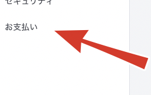
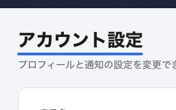
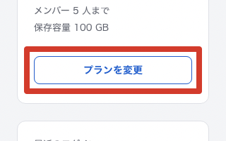
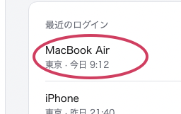
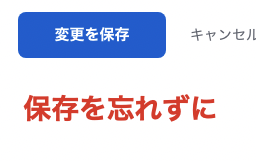
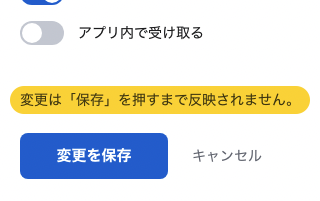
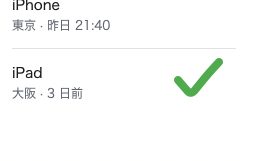
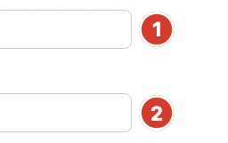
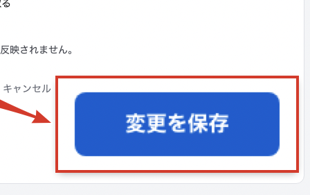
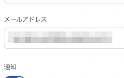
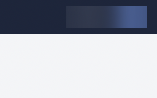
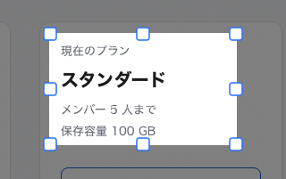
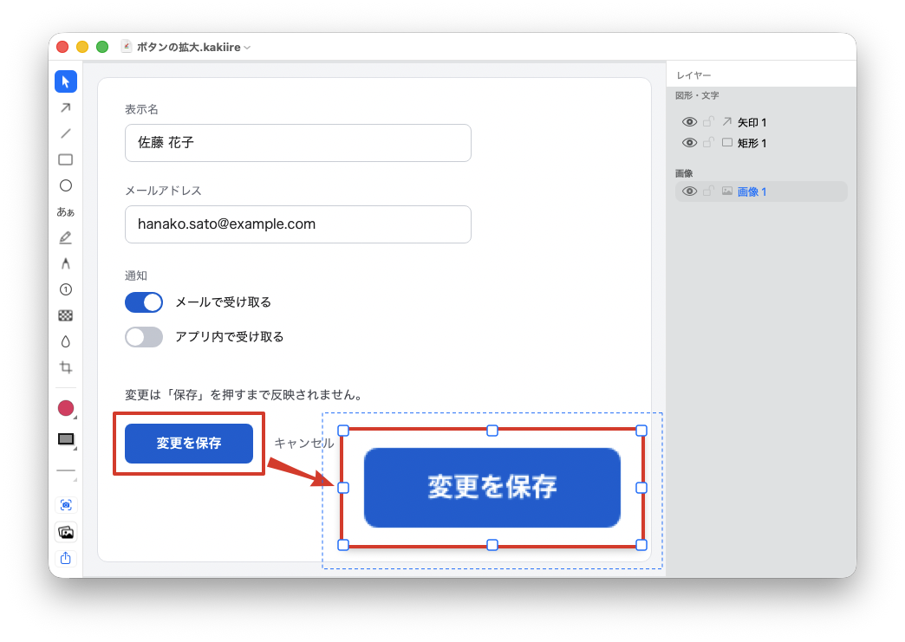
02 — 画像を重ねる
別のスクリーンショットや写真を、上に重ねて貼れます。小さなボタンを拡大して添えたり、変更前と変更後を並べたり。
03 — レイヤー
書き入れた矢印や枠は、1つずつレイヤーとして残ります。右の一覧から選んで、動かす、色を変える、消す。保存して開き直したあとでも同じです。
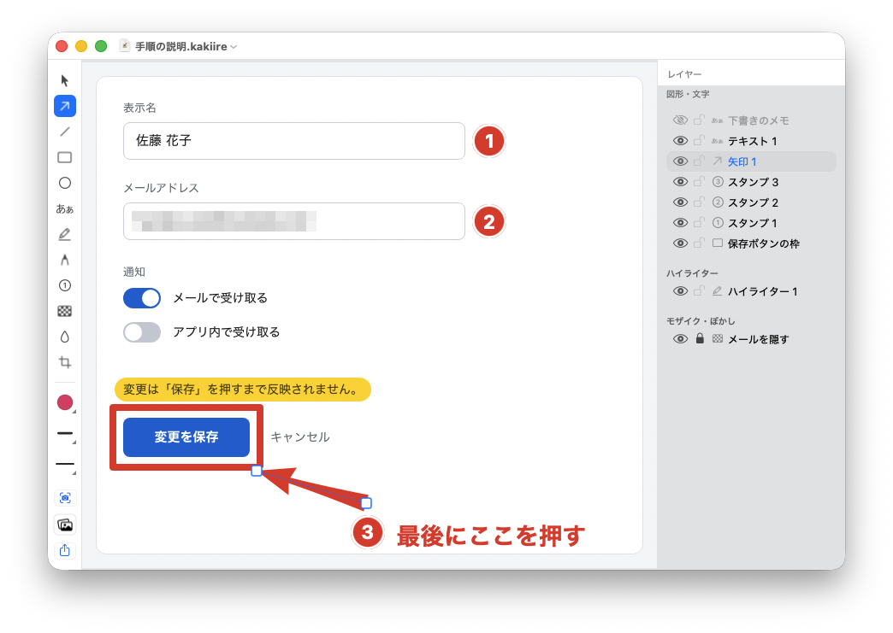
04 — 保存と書き出し
手元に残す
人に渡す
.kakiire には伏せる前の画像も入っています。人に渡すのは、書き出した画像のほうにしてください。
05 — 撮る
どのアプリを使っていても、ショートカットひとつで撮影。撮り終わると編集画面が前に出るので、すぐ書き入れられます。メニューバーからも呼び出せます。
すでにある画像は、ドラッグ&ドロップか ⌘V の貼り付けで。
06 — AI から使う
コマンドの kakiire と MCP サーバーで、Claude Code などの AI エージェントが、画像に矢印・枠・モザイクを付けられます。描くのはアプリと同じ仕組みなので、仕上がりも同じ。.kakiire で書き出せば、少しずれた枠もアプリで直せます。
kakiire annotate で、JSON に書いた注釈をまとめて付けるkakiire mcp)を登録すれば、「保存ボタンを赤枠で囲んで」と頼めるCLI と MCP サーバーは開発中です。アプリとは別に配る予定です。
$ claude mcp add kakiire -- kakiire mcp > ~/Desktop/shot.png の「変更を保存」を赤枠で囲んで、 メールアドレスにモザイクをかけて。.kakiire で書き出して ● kakiire · get_image_info ● kakiire · annotate_image └ Wrote ~/Desktop/shot.kakiire (1280x800 px, 2 annotations).
07 — Skitch を使っていた人へ
Skitch は Intel 版のみで、Rosetta なしでは動きません。Kakiire は、あの先細りの矢印と手軽さを、Apple Silicon ネイティブでつくり直した Mac 専用アプリです。
Kakiire は Skitch の提供元とは関係のない、独立したアプリです。